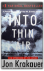
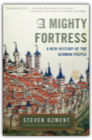

|
The Pig That Wants to Be Eaten: 100 Experiments for the Armchair Philosopher

Lively, clever, and thought-provoking, The Pig That Wants to Be Eaten is a portable feast for the mind that is sure to satisfy any intellectual appetite. Spartina

Adventures in Medialand: Behind the News, Beyond the Pundits

Microserfs

Seizing the chance to be innovators instead of cogs in the Microsoft machine, this intrepid bunch strike out on their own to form a high-tech start-up company named Oop! in Silicon Valley. Living together in a sort of digital flophouse —"Our House of Wayward Mobility" — they desperately try to cultivate well-rounded lives and find love amid the dislocated, subhuman whir and buzz of their computer-driven world. Funny, illuminating and ultimately touching, Microserfs is the story of one generation's very strange and claustrophobic coming of age. Nickel and Dimed: On (Not) Getting By in America
Millions of Americans work for poverty-level wages, and one day Barbara Ehrenreich decided to join them. She was inspired in part by the rhetoric surrounding welfare reform, which promised that any job equals a better life. But how can anyone survive, let alone prosper, on $6 to $7 an hour? To find out, Ehrenreich moved from Florida to Maine to Minnesota, taking the cheapest lodgings available and accepting work as a waitress, hotel maid, house cleaner, nursing-home aide, and Wal-Mart salesperson. She soon discovered that even the "lowliest" occupations require exhausting mental and physical efforts. And one job is not enough; you need at least two if you intend to live indoors. Nickel and Dimed reveals low-wage America in all its tenacity, anxiety, and surprising generosity — a land of Big Boxes, fast food, and a thousand desperate strategies for survival. Instantly acclaimed for its insight, humor, and passion, this book is changing the way America perceives its working poor. Dancing in the Streets: A History of Collective Joy
Drawing on a wealth of history and anthropology, Barbara Ehrenreich uncovers the origins of communal celebration in human biology and culture. From the earliest orgiastic Mesopotamian rites to the medieval practice of Christianity as a "danced religion" and the transgressive freedoms of carnival, she demonstrates that mass festivities have long been central to the Western tradition. In recent centuries, this festive tradition has been repressed, cruelly and often bloodily. But as Ehrenreich argues in this original, exhilarating, and ultimately optimistic book, the celebratory impulse is too deeply ingrained in human nature ever to be completely extinguished. Inside Prime Time: With a New Introduction

Unsurpassed since its first publication, Inside Prime Time is the only book to take us behind the scenes to reveal how prime-time shows get on the air, stay on the air, and are shaped by the political and cultural climate of their times. Using more than 200 interviews with network executives, producers, writers, agents, and actors, as well as months of on-set investigation during the networks' more prosperous years, sociologist and critic Todd Gitlin takes us into a frantic world searching for hit shows. The result is both a lucid picture of the mechanics of prime time and a series of vivid stories of what succeeded or failed, and why. His analysis includes a blow-by-blow account of how the exceptional police series Hill Street Blues succeeded against all odds before eventually succumbing to formula itself. No one else has analyzed, as Gitlin has, the inside track that links executives and producers, or the efforts of worried advertisers, hopeful writers, and the lobbyists of the fundamentalist right to shape America's waking hours. In a new introduction, Gitlin describes the elements of the new television order, and argues that the proliferation of cable channels and the decline of the old networks have not fundamentally changed the business mentality that guides decisions about the entertainment that will fill Americans' leisure time. The Story of the University of Chicago

Mobility and Modernity: Migration in Germany, 1820-1989
Thus far the changing total volume of migration has not been traced over a long period for any country. Unique migration registration statistics, both detailed and broadly geographical in coverage, allow the precise plotting of migration rates in Germany since 1820. Steve Hochstadt combines careful quantitative methods, easily understood numerical data, and social analysis based upon broad reading in German social history to show that current beliefs about the direction and timing of changes in German mobility, which have been based on late nineteenth-century anxieties about urbanization and industrialization, do not match the data. Migration rates in Germany rose continuously throughout the nineteenth century, and have fallen during the twentieth century. Mobility, Hochstadt argues, was not an unprecedented accompaniment to industrialization, but a traditional rural response to specific economic changes. Hochstadt's more precise analysis of urban in- and outmigration shows the mechanism of urbanization to have been the migration of families rather than the much greater, but also more circular, migration of single men and women. Hochstadt demonstrates the importance of examining historical behavior, powerfully justifying the methods of historical demography as a path to social understanding. The data and specific conclusions are German, but the methods and reinterpretaion of migration history have much wider application, both to other modern European nations and to currently developing countries. Those who study the modern social history of Europe, the mechanisms that formed urban working classes, and the methods of historical demography will be interested in Hochstadt's work. Steven Hochstadt was awarded the Social Science History Association's Allan Sharlin Memorial Award in 2000 for Mobility and Modernity. He is Associate Professor of History, Bates College. Metamagical Themas: Questing For The Essence Of Mind And Pattern

Brave New World
"Mr. Huxley is eloquent in his declaration of an artist's faith in man, and it is his eloquence, bitter in attack, noble in defense, that, when one has closed the book, one remembers." —Saturday Review of Literature "A Fantastic racy narrative, full of much excellent satire and literary horseplay." —Forum "It is as sparkling, provocative, as brilliant, in the appropriate sense, as impressive ads the day it was published. This is in part because its prophetic voice has remained surprisingly contemporary, both in its particular forecasts and in its general tone of semiserious alarm. But it is much more because the book succeeds as a work of art...This is surely Huxley's best book." —Martin Green The Murder Room
Murders present meet murders past in P.D. James’s latest harrowing, thought-provoking thriller. Commander Adam Dalgliesh is already acquainted with the Dupayne—a museum dedicated to the interwar years, with a room celebrating the most notorious murders of that time—when he is called to investigate the killing of one of the family trustees. He soon discovers that the victim was seeking to close the museum against the wishes of the fellow trustees and the Dupayne's devoted staff. Everyone, it seems, has something to gain from the crime. When it becomes clear that the murderer has been inspired by the real-life crimes from the murder room—and is preparing to kill again—Dalgliesh knows that to solve this case he has to get into the mind of a ruthless killer. Buddhism: A Very Short Introduction

About the Series: Oxford's Very Short Introductions series offers concise and original introductions to a wide range of subjects—from Islam to Sociology, Politics to Classics, Literary Theory to History, and Archaeology to the Bible. Not simply a textbook of definitions, each volume in this series provides trenchant and provocative—yet always balanced and complete—discussions of the central issues in a given discipline or field. Every Very Short Introduction gives a readable evolution of the subject in question, demonstrating how the subject has developed and how it has influenced society. Eventually, the series will encompass every major academic discipline, offering all students an accessible and abundant reference library. Whatever the area of study that one deems important or appealing, whatever the topic that fascinates the general reader, the Very Short Introductions series has a handy and affordable guide that will likely prove indispensable. Into Thin Air: A Personal Account of the Mt. Everest Disaster

Jon Krakauer
National Bestseller A bank of clouds was assembling on the not-so-distant horizon, but journalist-mountaineer Jon Krakauer, standing on the summit of Mt. Everest, saw nothing that "suggested that a murderous storm was bearing down." He was wrong. The storm, which claimed five lives and left countless more—including Krakauer's—in guilt-ridden disarray, would also provide the impetus for Into Thin Air, Krakauer's epic account of the May 1996 disaster. By writing Into Thin Air, Krakauer may have hoped to exorcise some of his own demons and lay to rest some of the painful questions that still surround the event. He takes great pains to provide a balanced picture of the people and events he witnessed and gives due credit to the tireless and dedicated Sherpas. He also avoids blasting easy targets such as Sandy Pittman, the wealthy socialite who brought an espresso maker along on the expedition. Krakauer's highly personal inquiry into the catastrophe provides a great deal of insight into what went wrong. But for Krakauer himself, further interviews and investigations only lead him to the conclusion that his perceived failures were directly responsible for a fellow climber's death. Clearly, Krakauer remains haunted by the disaster, and although he relates a number of incidents in which he acted selflessly and even heroically, he seems unable to view those instances objectively. In the end, despite his evenhanded and even generous assessment of others' actions, he reserves a full measure of vitriol for himself. This updated trade paperback edition of Into Thin Air includes an extensive new postscript that sheds fascinating light on the acrimonious debate that flared between Krakauer and Everest guide Anatoli Boukreev in the wake of the tragedy. "I have no doubt that Boukreev's intentions were good on summit day," writes Krakauer in the postscript, dated August 1999. "What disturbs me, though, was Boukreev's refusal to acknowledge the possibility that he made even a single poor decision. Never did he indicate that perhaps it wasn't the best choice to climb without gas or go down ahead of his clients." As usual, Krakauer supports his points with dogged research and a good dose of humility. But rather than continue the heated discourse that has raged since Into Thin Air's denouncement of guide Boukreev, Krakauer's tone is conciliatory; he points most of his criticism at G. Weston De Walt, who coauthored The Climb, Boukreev's version of events. And in a touching conclusion, Krakauer recounts his last conversation with the late Boukreev, in which the two weathered climbers agreed to disagree about certain points. Krakauer had great hopes to patch things up with Boukreev, but the Russian later died in an avalanche on another Himalayan peak, Annapurna I. In 1999, Krakauer received an Academy Award in Literature from the American Academy of Arts and Letters—a prestigious prize intended "to honor writers of exceptional accomplishment." According to the Academy's citation, "Krakauer combines the tenacity and courage of the finest tradition of investigative journalism with the stylish subtlety and profound insight of the born writer. His account of an ascent of Mount Everest has led to a general reevaluation of climbing and of the commercialization of what was once a romantic, solitary sport; while his account of the life and death of Christopher McCandless, who died of starvation after challenging the Alaskan wilderness, delves even more deeply and disturbingly into the fascination of nature and the devastating effects of its lure on a young and curious mind." Winter Hiking and Camping

Handbook of Russian Prepositions

Six Easy Pieces: Easy Rawlins Stories
Maine Beautiful

Power, Faith, and Fantasy: America in the Middle East: 1776 to the Present

A Mighty Fortress: A New History of the German People

Steven Ozment
The word "German" was being used by the Romans as early as the mid–first century B.C. to describe tribes in the eastern Rhine valley. Nearly two thousand years later, the richness and complexity of German history have faded beneath the long shadow of the country's darkest hour in World War II. Now, award-winning historian Steven Ozment, whom The New Yorker has hailed as "a splendidly readable scholar," gives us the fullest portrait possible in this sweeping, original, and provocative history of the German people, from antiquity to the present, holding a mirror up to an entire civilization — one that has been alternately Western Europe's most successful and most perilous.
Mayflower: A Story of Courage, Community, and War

Harry Potter and the Order of the Phoenix

We could tell you, but then we'd have to Obliviate your memory. Harry Potter and the Half-Blood Prince
We could tell you, but then we'd have to Obliviate your memory. Harry Potter and the Deathly Hallows

You'll find out July 21! Harry Potter and the Prisoner of Azkaban

Lend Me Your Ears: Great Speeches In History
Philosophical Dictionary

Medieval Russia's Epics, Chronicles, and Tales
|


My Library
Collection Total:
1320 Items
1320 Items
Last Updated:
Apr 14, 2013
Apr 14, 2013
 Made with Delicious Library
Made with Delicious Library